Growth factors, cytokines and insulin do not open channels or activate G proteins. Their receptors are enzymes, or bind enzymes: mostly tyrosine kinases. Today: how a receptor kinase passes a signal through a chain of kinases to the nucleus, and why these chains are the most common targets of modern cancer drugs.
After this lecture you can:
describe how a receptor tyrosine kinase (RTK) is switched on: dimerisation, autophosphorylation, SH2 docking;
explain how Ras works as a GTPase switch, turned on by a GEF and off by a GAP;
follow three pathways: Ras–RAF–MEK–ERK, PI3K–Akt–mTOR and JAK–STAT;
explain how a kinase cascade amplifies a signal and makes a switch-like response, and how negative feedback and cross-talk shape it;
explain how phospho-specific antibodies show which kinase is active;
explain how imatinib, trastuzumab, EGFR and BRAF inhibitors act, and how tumours become resistant.
ELO 3 (signalling), with cancer examples for ELO 9.
The question: who decides when a cell divides?
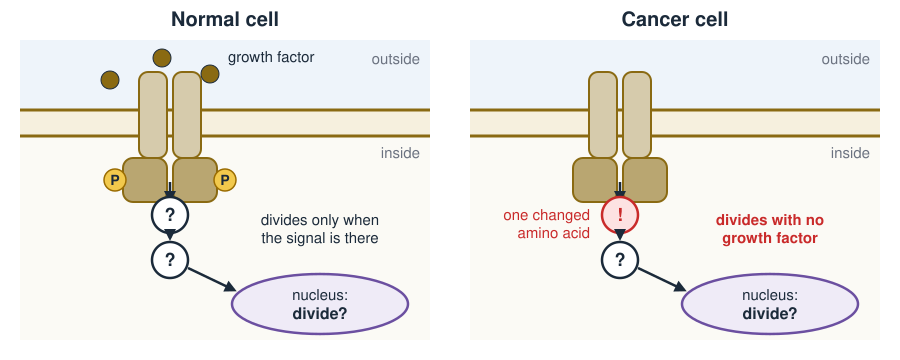
Cells in your body divide only when neighbours send growth factors. Take the growth factor away, and a normal cell stops.
Many cancer cells divide without the signal. Often the cause is a single changed amino acid in one kinase, or in Ras.
How does a signal outside become a decision inside? Why can one point mutation take over that decision? And can a drug take it back?
Recap: two kinds of molecular switch
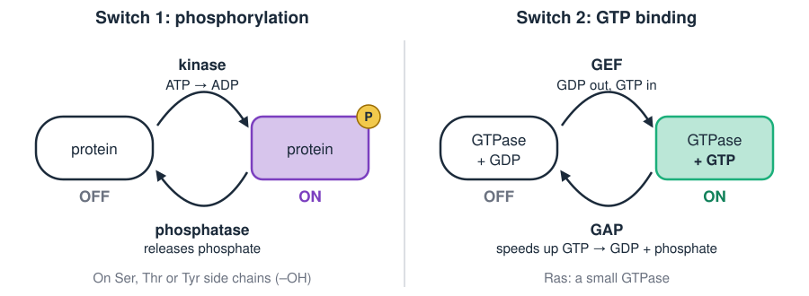
Phosphorylation: a kinase puts a phosphate from ATP on a Ser, Thr or Tyr; a phosphatase takes it off. The negative charge changes the protein’s shape or creates a binding site.
GTP binding: a GTPase is ON with GTP and OFF with GDP. A GEF swaps GDP for GTP; a GAP speeds up GTP hydrolysis.
Recap from the lecture on principles of cell communication; today both switches are wired together.
Enzyme-coupled receptors: three kinds
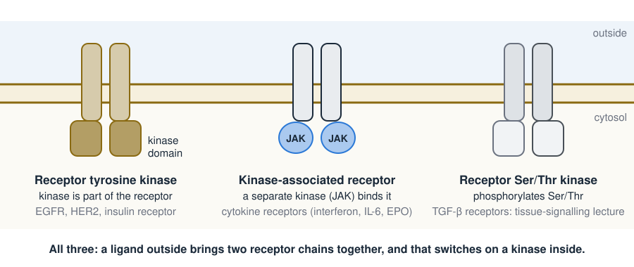
Receptor tyrosine kinases (RTKs): about 58 in humans. Growth factors (EGF, PDGF, FGF), insulin. Our main topic.
Kinase-associated receptors: no kinase of their own; a JAK kinase is bound to them. Most cytokines.
Receptor serine/threonine kinases: TGF-β family, in the lecture on signalling that shapes tissues.
RTK activation: dimerisation and autophosphorylation
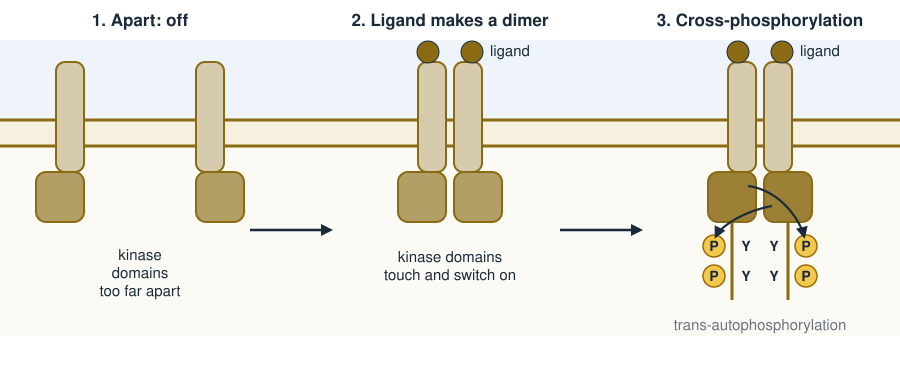
One ligand brings two receptor chains together (a dimer).
The two kinase domains phosphorylate each other (trans-autophosphorylation): first in their activation loops, which turns the kinases fully on, then on tyrosines in the tails.
Simplified: the insulin receptor is already a dimer; insulin changes its shape. The EGF receptor forms an asymmetric dimer: one kinase activates the other.
Phosphotyrosines are docking sites: SH2 domains
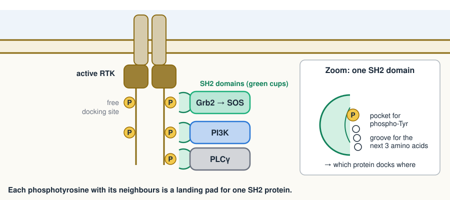
An SH2 domain (about 100 amino acids) binds a phosphotyrosine plus the next few amino acids. Each docking site therefore attracts particular proteins.
Grb2 (an adaptor) brings SOS to the membrane → Ras. PI3K → lipid signals. PLCγ → IP₃ and Ca²⁺ (as in the GPCR lecture).
One active receptor builds a signalling complex that starts several pathways at once.
Ras: a GTPase switch at the membrane
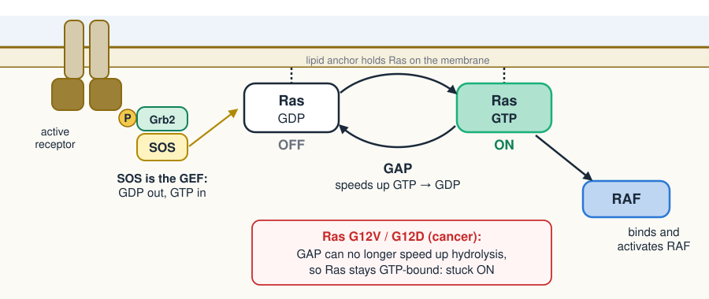
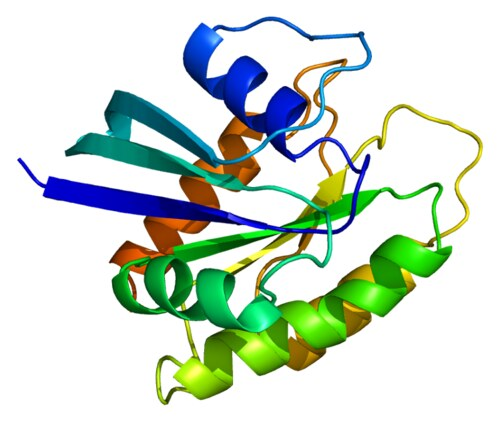
Human H-Ras (PDB 121P): a small GTPase, about 21 kDa.
Grb2 brings SOS (a GEF) to the membrane, where Ras sits on a lipid anchor. SOS swaps GDP for GTP: Ras ON.
Ras-GTP binds and activates the kinase RAF. A GAP (e.g. neurofibromin, NF1) makes Ras hydrolyse its GTP: Ras OFF.
The MAP kinase cascade: Ras → RAF → MEK → ERK
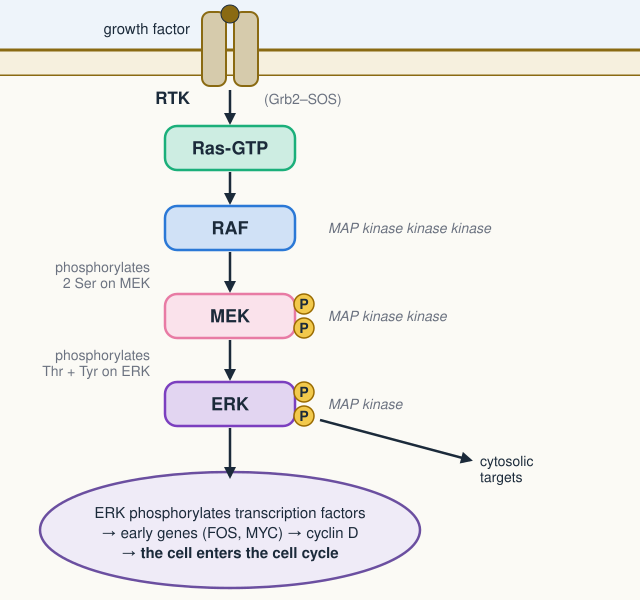
RAF phosphorylates MEK on two serines. MEK phosphorylates ERK on a Thr and a Tyr. ERK is active only when both are phosphorylated.
Active ERK phosphorylates hundreds of proteins in the cytosol and enters the nucleus.
In the nucleus it activates transcription factors → immediate early genes (FOS, MYC) within minutes → cyclin D → the cell passes the start of the cell cycle.
General name: MAP kinase cascade (mitogen-activated protein kinase). The same three-kinase design is used for stress signals (JNK, p38).
Why three kinases? Amplification and a switch
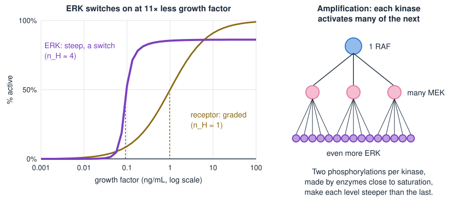
Amplification: each active kinase phosphorylates many molecules of the next. A few thousand active receptors can switch on hundreds of thousands of ERK molecules.
Switch-like (ultrasensitive): each level needs two phosphorylations, by enzymes near saturation, so each level is steeper than the one above. ERK goes from off to on over a small change in growth factor. Try it:Demo: kinase cascade.
PI3K–Akt–mTOR: survive and grow
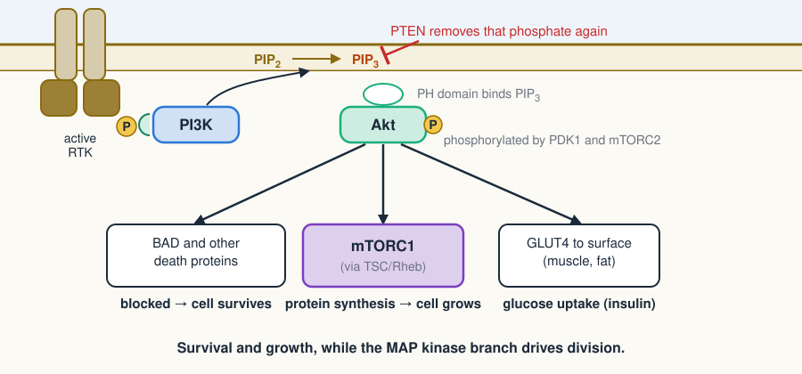
PI3K docks on the receptor and phosphorylates a membrane lipid: PIP₂ → PIP₃. PTEN reverses this.
Akt binds PIP₃ with its PH domain, is phosphorylated and activated, then leaves the membrane.
Akt blocks death proteins (BAD; the apoptosis lecture), activates mTORC1 (protein synthesis, cell growth) and, after insulin, sends GLUT4 to the cell surface.
JAK–STAT: from receptor to gene in four steps
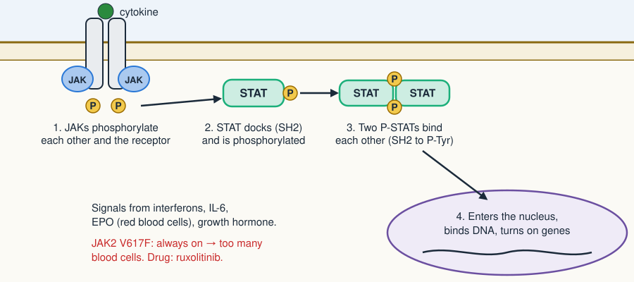
Cytokine receptors have JAK kinases bound to their tails. The ligand brings two JAKs together; they phosphorylate each other and the receptor.
STAT docks with its SH2 domain, is phosphorylated, and two STATs bind each other.
The STAT dimer is the transcription factor: no second messenger, no cascade. Interferons, IL-6, EPO; much more in Immunologi.
Switching off, and negative feedback
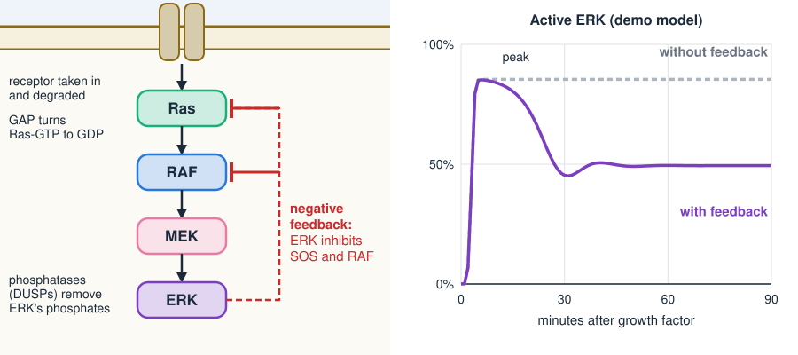
Every step has an off switch: receptor endocytosis and degradation (the endocytosis lecture), GAPs for Ras, phosphatases for the kinases and for PIP₃.
Negative feedback: active ERK phosphorylates SOS and RAF, which weakens the signal upstream, and it turns on genes for ERK phosphatases. Result: a peak, then a lower plateau.
Feedback makes the response robust, but it also matters for drugs: block one step, and the brake upstream is released.
Cross-talk: pathways form a network
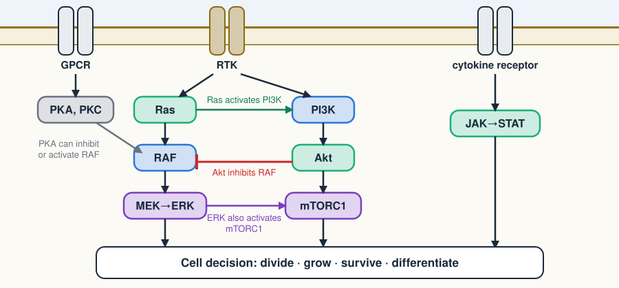
One receptor starts several pathways; one pathway is fed by several receptors.
The branches activate (Ras → PI3K; ERK → mTORC1) and inhibit each other (Akt → RAF). GPCR signals (PKA) feed in too.
The cell integrates all of this into one decision. Our slides show single lines through a network of hundreds of proteins.
How do we know? Phospho-specific antibodies
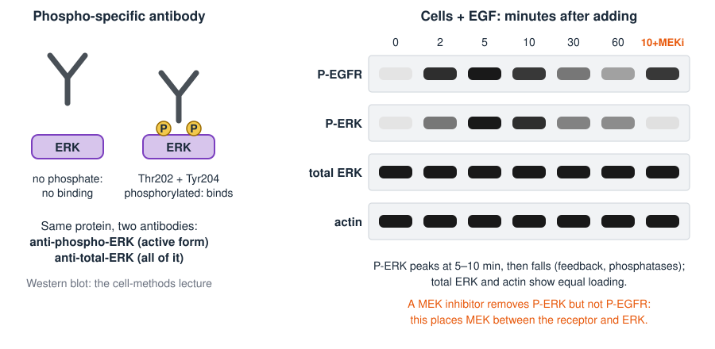
An antibody raised against a phosphorylated peptide binds the protein only when that site is phosphorylated: it reports activity, not just amount.
Western blot with anti-phospho-ERK and anti-total-ERK on cells at different times after EGF: P-ERK peaks at 5–10 min. Loading control: actin.
Add an inhibitor: the steps below it lose their phosphates, the steps above do not. This orders the pathway.
Why it matters: cancer breaks these switches
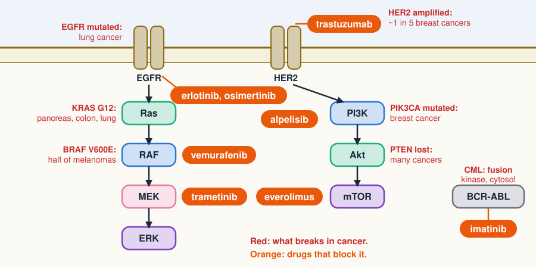
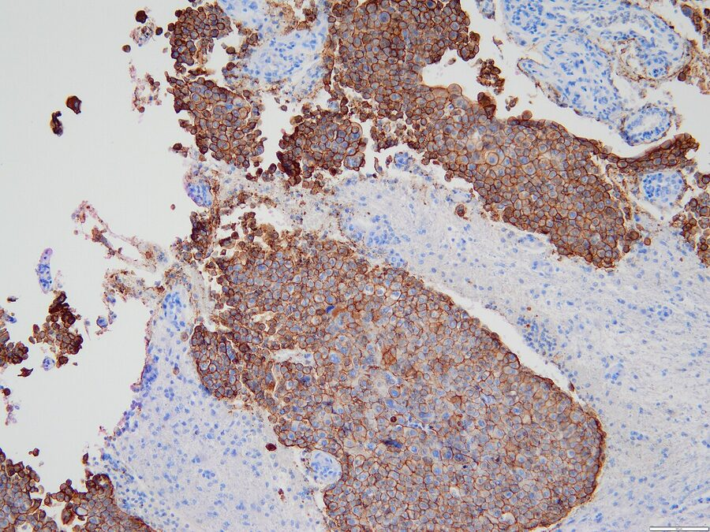
Breast cancer stained for HER2 (brown, cell membranes), score 3+: the gene is amplified.
RAS genes are mutated in about one cancer in five; BRAF V600E in about half of melanomas; HER2 is amplified in about 15–20 % of breast cancers.
Trastuzumab (1998), an antibody against the outside of HER2, blocks signalling and marks the cells for immune attack. EGFR inhibitors (erlotinib, osimertinib) block the ATP pocket in lung cancers with EGFR mutations.
Why it matters: imatinib, the first targeted cancer drug
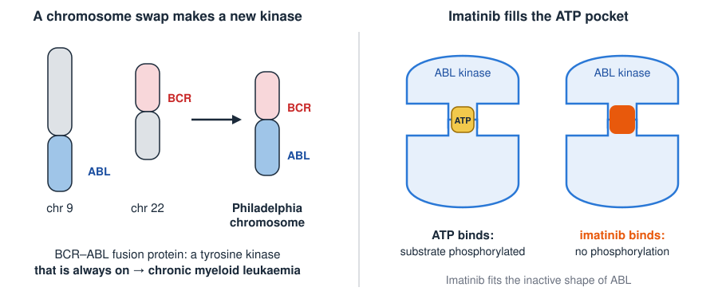
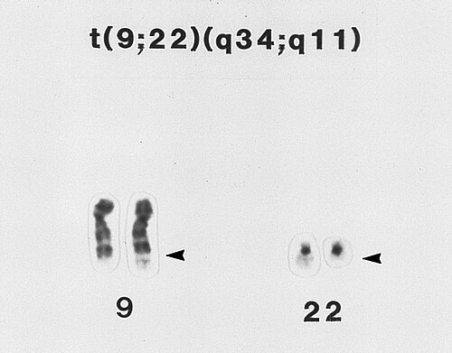
Chromosomes 9 and 22 from a CML patient; arrows: the swapped pieces.
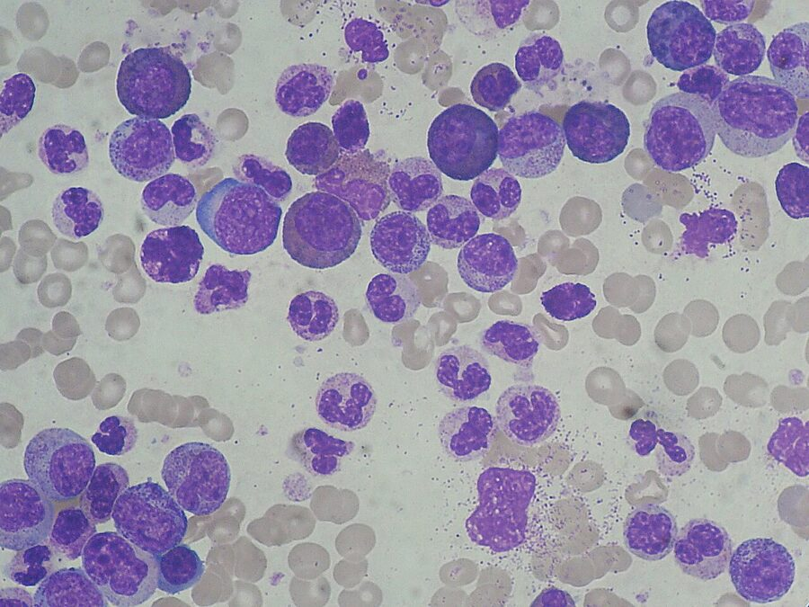
CML blood: far too many white cells.
CML: chromosomes 9 and 22 swap pieces; the fusion gene makes BCR-ABL, a tyrosine kinase that is always on.
Imatinib (approved 2001) sits in the ATP pocket of ABL. About 8 in 10 patients are alive after 10 years.
Why it matters: BRAF V600E and vemurafenib
Melanoma on the skin. About half carry a BRAF mutation.
BRAF V600E is active without Ras and escapes the ERK feedback. Melanoma cells depend on it.
Vemurafenib (2011) blocks V600E-BRAF: most tumours shrink, but often regrow within months.
In cells without the mutation, the same drug can activate RAF dimers (“paradoxical activation”): some patients get new skin tumours.
BRAF + MEK inhibitor together (dabrafenib + trametinib) work longer and cause fewer side effects.
In colon cancer with the same mutation, vemurafenib alone hardly works: the ERK brake is released and EGFR turns the pathway back on.
How resistance appears
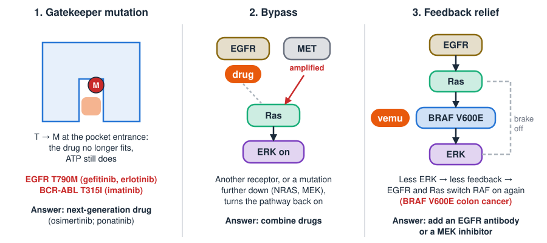
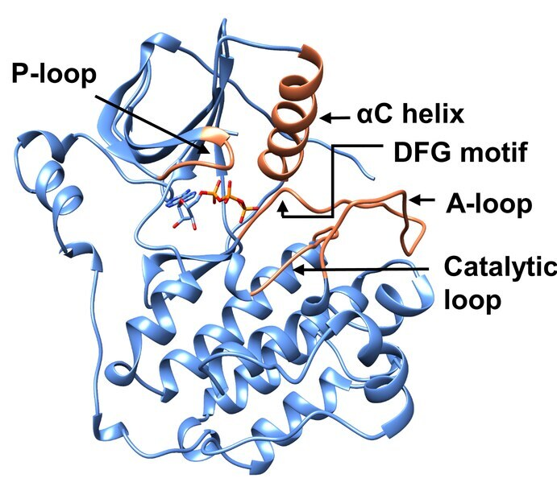
EGFR kinase domain; the ATP pocket lies between the two lobes, under the P-loop.
Gatekeeper mutation: a bigger amino acid at the entrance of the ATP pocket keeps the drug out, but not ATP (EGFR T790M, BCR-ABL T315I).
Bypass and feedback relief: another route turns ERK back on. Answer: next-generation drugs and combinations (Kliniska prövningar och läkemedelsutveckling).
Summary
Enzyme-coupled receptors are single-pass. The ligand brings two chains together; the kinases phosphorylate each other, and phosphotyrosines become docking sites for SH2 proteins.
Ras is a GTPase switch: SOS (GEF) turns it on, a GAP turns it off. Ras-GTP starts the RAF → MEK → ERK cascade; ERK turns on genes for division.
A three-kinase cascade amplifies and makes a switch-like response. PI3K–Akt–mTOR drives survival and growth; JAK–STAT goes straight to the genes. The pathways cross-talk.
Signals are switched off by GAPs, phosphatases, endocytosis and negative feedback. Phospho-specific antibodies show which step is active.
Cancers break these switches (HER2, EGFR, KRAS, BRAF V600E, BCR-ABL). Targeted drugs (trastuzumab, imatinib, vemurafenib) block them; resistance comes from gatekeeper mutations, bypass and feedback relief.
Read more (optional): Alberts et al., Molecular Biology of the Cell, 7th ed., ch. 15.